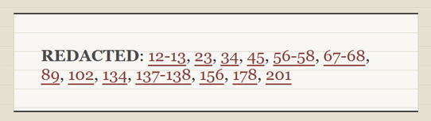
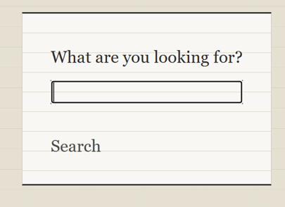
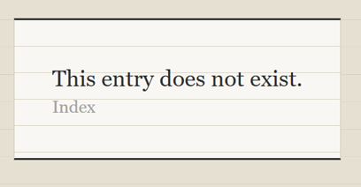
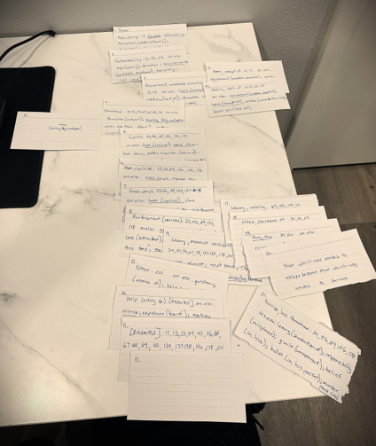
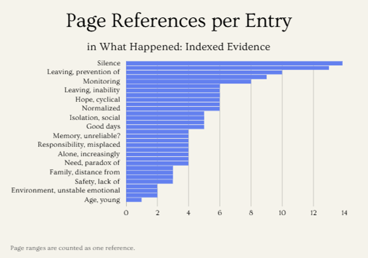

Recovery Literacy: Reclaiming Authorship of the Stories Trauma Makes Unreachable
Abstract
Trauma can make a person’s own story unreachable, a condition this webtext calls narrative dispossession, extending McGranahan’s (2010) term from communities to the individual. Working as both maker and analyst, I test a framework on my own Twine, What Happened: Indexed Evidence, with Santos’s (2011) Kairos webtext as a comparison. Tracing literacy theory from skill to social practice to design, I argue that each turn moved the obstacle to authorship further outside the writer, and that trauma moves it back inside. Clinical research shows that traumatic memory returns as sensory fragments before it becomes narrative, and MacCurdy (2007) shows how writers make that move. Building on Bacibianco’s (2026) use of recovery literacy, I extend the term from addiction to trauma and from who may tell a story to whether the teller can reach it at all. Read through this framework, the Twine’s index form enacts a memory that is unreachable, fragmented, and slowly shaped into a story the reader helps author. A heuristic adapted from Cook’s (2002) layered literacies offers questions makers and readers can put to any work. Testifying and historical trauma extend the frame to communities, where a shared story can restore access or replace it. The missing entry, finally, turns out to have been composed by the index all along.
Index
- Communal layerVIII
- Entry, revisitedIX
- Entry does not exist, thisI
- Index, writing from inside theII
- Literacy, what it has come to meanIII
- Questions for reaching a storyVII
- Recovery, what it requiresIV
- Recovery literacyV
- What Happened, readingVI
- About this webtextnote
- Referencesrefs
Entries are alphabetized, as in the Twine. Read in any order, or begin at I.
Begin at IAbout This Webtext
This webtext is built as a set of pages, one per section, in the panel form of Santos’s (2011) Kairos webtext. Each page is styled as a ruled index card, the material the Twine was first written on, and the contents page is an alphabetized index, so the reader meets the argument in the same form as the test case.
The sections are numbered and run in order, with previous and next links on every page, but the index lets a reader enter anywhere. That is the same freedom of order the Twine offers, without its withheld pages: everything argued here can be reached.
The Twine, What Happened: Indexed Evidence, is linked rather than embedded, so it opens in its own window and keeps its own navigation. For a Kairos submission, a copy of the Twine would be hosted inside the webtext’s folder so the piece remains stable over time. All six figures carry alt text, and figures are numbered in reading order.
Play the Twine: What Happened: Indexed Evidence.
This Entry Does Not Exist: The Mediated Layer
REDACTED. That is all the reader finds.
In What Happened: Indexed Evidence, the Twine I made as the test case for this project, the story is told the way a back-of-book index tells one: entries, page numbers, cross-references. Nothing else. A reader comes to the entry “Help, asking for” and clicks. The index offers page numbers, the way an index should. Every one of them is REDACTED. The reader tries one. Nothing. The reader tries the next. Nothing again.

After the last empty page, the screen asks a question: “What are you looking for?”

The reader can type anything into the search. Whatever they type, the answer is the same: “This entry does not exist.”

From the reader’s side, the sequence feels like a reasonable request meeting a system that cannot answer it. There is something to find; the index itself says so, with a heading and page numbers to prove it. The reader follows the trail exactly as instructed and arrives at a refusal.
I built it that way.
The sequence does not describe a gap; it makes the reader perform one. Not every reader gets that far. The REDACTED search sits along only one path through the index, and a reader can only follow the links the index offers. Some never arrive. That limit is deliberate. The headings exist. The page numbers exist. The pages do not. The space between them is the subject here.
In Project 1 for this course, I defined my keyword, mediated authorship, as the way platforms, tools, and institutions shape who gets to author a text. The premise beneath that definition is that writing tools are never neutral. Hayles (1999) makes this case in her account of how information technologies reshaped everyday life. Following Kittler’s history of the typewriter, she argues that technologies of inscription become media when they intervene between writer and text, “inserting themselves into the chain of textual production” (p. 26). Later in the chapter, describing how virtual reality users learn the stylized gestures a computer can recognize, Hayles clarifies that the influence runs both ways: “The computer molds the human even as the human builds the computer” (p. 47).
Recovery literacy turns that idea inward. Sometimes what intervenes between a writer and a text is not a platform but the writer’s own history. Trauma inserts itself into the chain of textual production before a single word is written, and the question becomes whether the story can be reached at all. I take the term narrative dispossession from McGranahan (2010) and extend it. Opening an account of Tibetan women whose war histories their community does not recognize, she observes that possessing one’s own life story “is not a given,” because thinking of a life as narratable involves social processes “operative well beyond individual processes of reflection or experience” (p. 768). Her conclusion is the one that this project builds on, that “to narrate one’s life is not just an issue of how, but also a matter of if” (p. 768). For McGranahan, the if is social, a question of what a community’s norms admit as history. I move it one layer in. For the survivor, the if precedes any audience: before a story can be refused recognition, it has to be reachable by the person whose story it is. That inward dispossession rests on Herman’s (1997) account of trauma, where she names disempowerment and disconnection as trauma’s core experiences. She then argues that because others can offer support but not cure, the survivor “must be the author and arbiter of her own recovery” (p. 191). Introducing the second stage of recovery, in which the survivor tells the story of the trauma, she draws on Janet’s distinction between ordinary memory, “the action of telling a story,” and traumatic memory, which is “wordless and static” (p. 254). Narrative dispossession describes the space between those two kinds of memory, where the experience belongs to the person but the story does not, yet. The REDACTED search enacts this in the Twine. Some readers never arrive at it, just as a survivor may live without ever reaching the experience at all. The ones who do arrive find the heading but not the story.
Recovery literacy names the practices by which that authorship is reclaimed.
Writing from Inside the Index
This project uses two methods that share a premise: knowledge can come from inside the thing being studied. Autoethnography lets me treat my own experience of making as evidence about a cultural practice. Critical making lets the Twine serve as an argument in its own right, built and then read. Together, they place me in two roles at once, maker and analyst. That is the situated maker’s view this project works from.
The procedure is simple. I assembled the recovery literacy framework from course readings on literacy, recovery, and authorship (Sections III through V). Then I test it on What Happened, reading its structure, navigation, and withheld pages through the framework (Section VI). Santos’s (2011) Kairos webtext serves as a comparison case. Santos tells how a parents’ online network noticed the white eye reflex in a photo of his infant daughter, which led to her retinoblastoma diagnosis. He then argues against critics who see social media as feeding narcissism, contending that the need for validation is old and only the tools for meeting it are new. His is a story of crisis told in panels, and it gives the heuristic in Section VII a second work to be checked against.

These are the cards.
I wrote them by hand before I typed a single passage, one heading to a card, and they came out faster than I expected, already in relationship to one another. “Silence” needed “Isolation, social.” “Need, paradox of” needed “Thing, the.” I laid them on the floor and moved them around until they made an index. They wrote it one missing entry at a time.
The limit is plain. This is one case, made and analyzed by the same person. I cannot read the Twine the way a stranger would. I know what the REDACTED pages withhold.
A stranger meets a blank; I meet a blank I put there.
I don’t try to neutralize that position. I name it as the method’s condition, so readers can weigh my claims with it in view.
Three sources ground this approach. Critiquing the visualizing technologies of modern science, from satellites to imaging systems that claim to see everything without being anywhere, Haraway (1996) names that stance “the god-trick of seeing everything from nowhere” (p. 189). Haraway’s case for feminist objectivity grounded in particular, embodied location arrives at a simple moral, that “only partial perspective promises objective vision” (p. 190). A maker reading her own work is about as partial as a perspective gets. Haraway’s argument lets that partiality count as accountable knowledge rather than a flaw to apologize for.
Opening their overview with a history of the method, Ellis et al. (2011) define autoethnography as research and writing that seeks to “systematically analyze” personal experience to understand cultural experiences (para. 1). The word systematically matters: Section VI works through named design choices rather than impressions. Memory complicates the maker’s position further. To explain why autoethnographers judge their work by narrative truth rather than exact recall, Ellis et al. state plainly that “memory is fallible” (para. 32).
Although Haraway and Ellis et al. account for how a maker can know their own work, they do not account for the making itself. Ratto (2011) and Salter and Moulthrop (2021) do. Explaining why he chose the term, Ratto (2011) writes that critical making “signals a desire to theoretically and pragmatically connect two modes of engagement with the world that are often held separate,” critical thinking and physical making (p. 253). The aim of critical making is “to use material forms of engagement with technologies to supplement and extend critical reflection” while locating the analysis in “the constructive process” rather than the finished object (p. 253). Although Ratto’s workshops are collaborative, the premise holds for a single maker. For me, the index cards, and not the Twine alone, are evidence.
Introducing their book’s two voices, Salter and Moulthrop describe themselves as by turns creative and reflective, people who make things and then think about what they have made, and they admit that “the making and the thinking may be hard to tell apart” (p. 10). Positioning their own relationship to the platform, they observe that Twine’s most lasting stories tend to be raw and vulnerable (p. 12). They frame their own book as both critical study and creative guide (p. 9). Their work lets the Twine function here as more than illustration; it is a site of thinking.
What Literacy Has Come to Mean
Every major turn in literacy theory has relocated the obstacle to reading and writing, and each time it has moved the obstacle further from the writer’s interior. Kucer (2005) begins from the observation that disciplines remake literacy “in its own image” (p. 3) and answers with a model that is “dynamic and multidimensional” (p. 4), with cognitive, linguistic, sociocultural, and developmental dimensions at work in every act. The obstacle, in that model, is still partly inside the head. Gee (2011) moves it out. Reading and writing cannot be separated from the practices around them any more than the white squares can be removed from a chessboard (p. 41), and literacy becomes plural: a set of social practices, or literacies (p. 63). Now the obstacle is social. The New London Group (1996) moves it to the materials of design: meaning-makers draw on Available Designs, and “through their co-engagement in Designing, people transform their relations with each other, and so transform themselves” (p. 76). Vee (2013) moves it to the technology itself, defining literacy as “a human facility with a symbolic and infrastructural technology” (p. 45). Hayles (1999) completes the arc: the medium inserts itself “into the chain of textual production” (p. 26).
Mediated authorship, my original keyword, sits at the end of that arc. It names the condition in which the obstacle to authorship is wholly external: the platform, the tool, the institution.
What none of these accounts asks is what happens when the obstacle moves back inside, not as a cognitive skill deficit of the kind Kucer’s model could name, but as an experience the writer holds and cannot reach. That is the gap narrative dispossession fills. The survivor has the skill, the social practice, and the tool. All they lack is access to their own Available Designs. The REDACTED search is the place in the index where literacy, as usually defined, runs out.
Put Herman and the New London Group side by side, and a problem appears, though. Designing, for the latter, transforms the designer because it works on Available Designs; but traumatic memory, for the former, is “wordless and static” (Herman, 1997, p. 254). It is not available in the sense Design requires. It has no words to recombine and no shape to redesign. Van der Kolk (2014) describes the same impasse from the clinic: traumatic experience resists being put into words at all, because it was never laid down in language in the first place. A survivor who sits down to compose their story is a designer whose raw material is withheld from them, by them.
Ong (2002) supplies what turns this problem into a possibility. His large claims about oral and literate cultures are the ones Gee (2011) and the New Literacy Studies dismantled, and I do not adopt them. His smaller claim about the individual writer survives the critique: technologies are “interior transformations of consciousness” (p. 81), and writing gives what the writer lacks, since “to live and to understand fully, we need not only proximity but also distance” (p. 81). Distance is exactly what traumatic memory does not afford; it is static because it is too close.
Here Haraway (1996) does unexpected work. Her “god-trick of seeing everything from nowhere” (p. 189) describes a disembodied, unlocated vision. Dissociation is that vision turned inward: the survivor watching from nowhere, outside the body, with no position from which to tell. Haraway’s remedy, that “only partial perspective promises objective vision” (p. 190), is also the survivor’s: a story one can tell is told from somewhere. Recovery literacy is born from that possibility.
What Recovery Requires
Recovery as Capacity
Recovery already has a working definition, and it comes from the addiction field. The Recovery Research Institute (n.d.) describes it as “improved physical, psychological, and social well-being and health” following a substance use disorder. Well-being is the measure, and the model is broad by design: housing, employment, relationships, and health all count.
That breadth is the model’s strength. It is also its limit. A person can meet every well-being measure, hold a job, keep the house, show up for the kids, and still hold an experience they cannot tell. Herman (1997) names the dimension the well-being framework leaves out when she makes the survivor “the author and arbiter of her own recovery” (p. 191): authorship is a condition of recovery, not just a result of it. So the definition this project uses is narrow. Recovery, here, is a capacity: the capacity to consciously reach experiences that were overwhelming, dissociated, or fragmented, and shape them into a story one can tell.
The two definitions do not compete. A capacity model sits inside a well-being model as one dimension among several, the narrative one, which the broader frame does not name. Keeping the term recovery rather than inventing another keeps that relationship visible, and it keeps faith with Bacibianco’s (2026) use of recovery literacy in addiction storytelling, taken up in Section V. What a capacity model adds is a question the well-being model cannot ask. Not “is this person doing better?” but “can this person reach this?” The REDACTED search is built to pose that question to a reader. The index is functioning. The entry has a heading and page numbers. By every external measure, the system is intact. What is missing is access.
Fragments First
Why would a story be unreachable to the person who lived it? The clinical answer is that it was never stored as a story.
Van der Kolk and Fisler (1995) interviewed 46 adults with PTSD about how their traumatic memories first returned. Reporting the modalities of traumatic memory, they write that “no subject reported having a narrative for the traumatic event as their initial mode of awareness,” and that all subjects “initially ‘remembered’ the trauma in the form of somatosensory or emotional flashback experiences” (p. 517). Over time, “a narrative memory started to emerge.” At the time of the study, 41 of the 46 were “able to narrate a satisfactory story about what happened to them,” while five, all survivors of childhood trauma, “continued to be unable to tell a coherent narrative with a beginning, middle, and end” (p. 517). The authors trace the pattern to Janet, who described a person “unable to make the recital which we call narrative memory, and yet he remains confronted by (the) difficult situation” (cited in van der Kolk & Fisler, 1995, p. 511).
Herman (1997) describes the same movement from the clinical side. Introducing the stage of recovery in which the survivor tells the story, she contrasts ordinary memory, “the action of telling a story,” with traumatic memory, which is “wordless and static” (p. 254). Van der Kolk (2014) later restates his own findings for a general audience: traumatic memories are stored not as coherent narratives but as fragmented sensory and emotional traces, such as images, sounds, and physical sensations. Across the clinical accounts, the order is the same: the experience returns as sensation before it returns as story. Fragments first, then a story one can tell. The sequence matters for a literacy argument because it describes composition. The survivor is not retrieving a text that exists somewhere intact. They are assembling one from pieces that arrive out of order in sensory form without syntax. That is a design problem, and the index form in What Happened is built to show it: entries without pages, cross-references that lead to silence, a blank page where the story should be.
Rhetoric and Composition on Trauma
Rhetoric and composition has not always welcomed this material. The field’s long suspicion of personal writing, sharpened in the debates over expressivism, made trauma an uneasy subject for the writing classroom. MacCurdy (2007) writes against that resistance directly. Opening her book with a student who asked whether she could write about childhood abuse in a class journal, she acknowledges that “the academic opposition to personal writing has a theoretical as well as a practical edge” (p. 3), then argues for the writing anyway. Her case begins with how trauma is stored. Writing helps, she argues, “by unlocking these experiences from the parts of the brain that store iconic images and allowing us to put words to our difficult moments” (p. 2). Drawing on the same clinical literature traced here, she describes traumatic memories as “disjointed fragments of memory replete with sensory detail” (p. 22) and cites Herman’s term for them, “frozen memories” (p. 22). Her chapter title states the movement this project tracks: from traumatic image to narrative.
MacCurdy’s most compact statement of what that movement gives back is also a claim about authorship: “We write our trauma; our trauma does not write us” (p. 2). Her translation model and van der Kolk and Fisler’s clinical sequence describe the same movement from opposite sides. The clinicians document that narrative emerges after fragments; MacCurdy documents how a writer makes it emerge. Neither names the capacity that bridges them. Recovery literacy does.
This is also where Ong’s smaller claim earns its place. Ong’s writer gains distance from what was too close to see. If shaping a text can restructure thought, then the act of composing might also reshape what a writer can reach. A fragment set down on an index card, linked to another, then placed inside an actual index is no longer just a memory. It becomes something the writer can stand back from, move around, and read. In What Happened, that position is an index entry. The entry “Memory, unreliable?” carries its own question mark. The maker could not vouch for the page it pointed to. The question mark is part of the composition.
Recovery Literacy: The Distributed Layer
If, as one of MacCurdy’s students wrote, a survivor without their narrative “would be wandering helpless, fragmented, and alone” (2007, p. 3), then naming what restores it matters. The pieces are now in place. Literacy, after Gee and the New London Group, is a social practice and a design act that transforms the designer. Recovery, after van der Kolk and Fisler, is fragments becoming a narrative one can tell. Together, recovery literacy is the practice of reclaiming authorship of one’s own narrative: the design act performed on materials that trauma has made unavailable, until they become available.
The definition is deliberately modest. It does not claim that writing heals, or that every survivor should write. It claims that composing is one way a story that was out of reach can be brought into consciousness. As McGranahan concludes from Butler’s account of self-narration, “dispossession thus both enables and constrains one’s ability to narrate” (2010, p. 769). The qualifier matters because the clinical record cuts both ways. Van der Kolk and Fisler’s five subjects who could not yet narrate were not failing at literacy: their fragments had not yet become material they could design with. Recovery literacy names a capacity, not an obligation, and a capacity can be partial. A survivor may reach one entry but not the next.
The definition also does something that the well-being model of recovery cannot. Well-being asks whether a person is doing better; recovery literacy asks whether they can reach, shape, and tell an experience. Those are literacy questions. They can be asked of a text, which is why a Twine can be read through them, and they can be asked of a reader as well as a maker.
One more consequence follows. If recovery literacy is a literacy in Gee’s sense, then it is social even when practiced alone. The index of What Happened was composed in private, on cards, but the form it took, an index, is a shared convention that tells a reader how to move through a text. The story was reclaimed partly by borrowing a reader’s expectations.
The term is not new, and this project owes its name to the scholar who brought it into rhetoric and composition. Bacibianco (2026), describing her podcast Voices from Rock Bottom and the storytelling constraints of Alcoholics Anonymous, uses “recovery literacy” for the narrative practices of addiction recovery, and sets out to challenge “the narrative authority of recovery literacy culture” (p. 144) through what she calls queerstory. For Bacibianco, recovery literacy is a culture of telling with its own conventions, and her project is to open those conventions to tellers that AA’s framework excludes. Her closing argument reframes the term as “a rhetorical practice of embodiment, of listening, telling, and acting” (p. 165).
This project extends her term along two lines. First, from addiction to trauma broadly: the narrative dispossession Herman describes is not confined to substance use, and the fragments-first pattern holds across trauma types. Second, from the social to the internal. Bacibianco’s concern is who gets to tell and in what form. Mine is the layer before that: whether the teller can reach the story at all. Both are questions of authorship. If hers concerns the room, then mine concerns the door.
A third use should be acknowledged to avoid confusion. In the addiction field, noted by the Recovery Research Institute, “recovery literacy” also names a public-health competency: knowing what recovery resources exist and how to use them. That is literacy in the older sense of information skill. It is not the sense here, though a person may need both. What the three uses share is instructive. Each treats recovery as something a person composes rather than something that happens to them. The disagreement is only about what gets composed: a public story, a resource map, or the story’s own availability to its author.
Three further sources sharpen what is being reclaimed. Prior (1998) returns the argument to mediated authorship, the keyword that started this project. Drawing on Goffman, he notes that “the speaker” collapses three roles: “the animator, who actually utters the word; the author, who selects the sentiments and words; and the principal, whose positions are being represented in the words” (p. 145). Prior uses the split to show how authorship is distributed across people and tools, which is why he proposes “mediated authorship” as a unit of analysis for literate activity. For recovery literacy, the split locates the loss precisely. The survivor remains the principal; it is their position the story would represent. Their body may even be the animator, replaying the fragments. What trauma takes is the author role, the selecting of words. That is the role recovery literacy reclaims.
Reclaiming it is neither a solitary act nor a new one. Haas (2007) locates nonlinear, memory-bearing composition in wampum belts, which she reads as texts that extend human memory through interconnected design and associative storage and retrieval (p. 77), and in bodies that remember the weaving along with the belt (p. 93). Nonlinear, memory-bearing composition is not a Twine invention, and neither is composing with absence. McGranahan’s (2010) narrative dispossession comes from Tibetan women whose war histories their community will not recognize. Vest (2012), an enrolled Monacan scholar, uses it for a Virginia legend that replaced his people’s account of their own burial mound with a colonial romance, so that the Monacan became “an incipient memory without a homeland” (p. 110). Haas’s communities were also dispossessed of land, language, and the belts themselves. Narrative dispossession, as extended here, names an individual loss, not a collective one, and it does not claim equivalence with them. What it takes from them is a distinction. Vest notes that the Monacan recovered and reburied their ancestors’ remains, “although an authentic narrative account of the Hayes Creek Indian mound is lacking” (p. 112). The material can come home before the story does. Recovery literacy concerns that second return.
Rumsey (2009) supplies the verbs here. Heritage literacy, in her account, tracks “how certain practices, tools, and concepts are adapted, adopted, or alienated from use, depending on the context” (p. 575), a decision-making process a person may not even be conscious of (p. 577). Recovery literacy is heritage literacy turned on one’s own history: choosing what to carry, what to reshape, and what to leave as a REDACTED page.
Reading What Happened: Indexed Evidence
Salter and Moulthrop (2021) describe Twine as “at its heart a system for making passages and links that the user navigates to different ends” (p. 3), a tool whose interface encourages makers to “think and work in nodes” and lets “any thought become a connection” (p. 6). That is how What Happened was made: on index cards, one entry at a time, before any passage was typed. The framework asks of the result three things. What navigation lets a reader reach. In what order. What it withholds.
The first decision was the index itself. A back-of-book index is all pointers and no body. It promises that for every heading there is a page. It presents experience already sorted, alphabetized, cross-referenced, done. Van der Kolk and Fisler’s subjects had fragments and no narrative. An index has headings and no prose. The form reproduces the condition it describes.
![A screenshot of the Twine editor on a dark grid background, showing about forty passage boxes connected by arrows. Across the top, cover, blankpage, Index, and Age, young run left to right. Below them, entries such as silence, gaslighting, isolation, social, need, paradox of, and belief (in him) branch and cross-link. A vertical chain in the center runs from help, asking for to memory, unreliable, then REDACTED, blank, and not found. A separate chain runs from need, paradox of to thing, the and then Definition.](img/fig5.png)
The second decision was the order of arrival. Cover, then blank page, then index, then a web. The blank page comes first, before anything, and a reader may think it’s an error. It isn’t. It tells the reader the gaps in this story are structural, and that they come before the story does. From the index, a reader can go almost anywhere. Every path runs through entries. Entries route to page numbers. Page numbers may or may not open. Salter and Moulthrop describe makers “offering players choices but then restricting them to produce manageable, and meaningful, narrative play” (pp. 3–4). Here the reader has freedom of order and no freedom of access.
The third decision was what to withhold. The chart makes this visible. The entry with the most page references, fourteen, is “Silence.” The entry with the fewest, one, is “Age, young.” The story’s most documented condition is the absence of telling, and its least documented is its starting point. Not every “see also” links. Some pages are REDACTED. One search returns nothing. They belong to what McGranahan (2010) calls “the genre of the untold” (p. 770).

Unreachable
On the story map, “help, asking for” leads to “Memory, unreliable,” then REDACTED, then a blank page, then “not found”: a five-step path to nothing, the longest unbroken line on the map. A reader who follows it performs the sequence van der Kolk and Fisler’s subjects described: an attempt to retrieve, a sensory trace, and no story at the end (1995, p. 517). The unlinked “see also” terms are quieter. A see-also asserts adjacency; when the term is present but not clickable, the connection is named and the crossing denied. That is Herman’s disconnection built into navigation. “Silence” ties the two together. It is the most reachable entry in the index, and it is the one about not telling.
Fourteen times, I wrote down that I didn’t say anything.
Fragmented
An index entry is the textual equivalent of the “somatosensory or emotional flashback experiences” that van der Kolk and Fisler’s subjects reported as their initial mode of awareness (p. 517). “Isolation, social” with six references is not a scene; it is a label and a set of coordinates. The experience has been sorted before it has been told. “Memory, unreliable?” names the problem from the inside, the only heading in the index that doubts itself, and on the map it is the gateway to REDACTED. The entry about unreliable memory is the one through which the reader reaches the pages that cannot be opened.
Shaped into a Story
Three choices move the Twine toward a story one can tell. The breadcrumb trail records each reader’s path, so fragments visited in some order become a line, and no two readers produce the same one. That makes the Twine a sort of miniature mediated authorship: in Prior’s terms, the maker stays principal while the author role, selecting and sequencing, is shared with whoever reads, much as Gee’s (2012) gamers “co-author the games they play by the choices they make” (p. 420). And the definition of “the thing” is reached only through “need, paradox of,” the entry that first names needing the person who causes the harm. The central event becomes nameable only after the reader has passed through the contradiction that kept it unnamed. It is the least narrative way to tell the thing, and it is the first and only place it is told.
Questions for Reaching a Story
The heuristic that follows borrows its shape from Cook (2002), who proposed “a theoretical frame for technical communication pedagogy based on six layered literacies: basic, rhetorical, social, technological, ethical, and critical” (p. 5). Surveying the historical frames that had each named one competency, Cook argued that none “fully articulate the multiple literacies necessary” and offered the layered frame as “a more integrative frame that incorporates all of these literacies into a single articulation” (p. 8). The word layered is the useful one. Cook's literacies are not stages. They operate at once, and a single act of composing can be read through all six.
The frame has proved extensible, which is why it suits a project proposing a new literacy. Swacha (2018), finding that “missing from this list, however, is any recognition of embodiment,” argued for embodied literacy as “a distinct seventh literacy” (p. 262). Bivens et al. (2018), writing in this journal, borrowed Cook's frame to argue that health literacy “is an embodied, multisensory experience that is invariably mediated by healthcare technologies” and close their web text with a list of questions, a heuristic for reading technologies through aural, tactile, and visual literacies. Both precedents add a layer by showing what the existing six cannot see. Both keep the six.
Recovery literacy follows the same procedure with one difference: rather than adding a layer, it puts one question to each of Cook’s six. Does this layer, in this work, let a maker or a reader reach the story and compose it? Cook built the frame for assessing a curriculum. Bivens et al. turned it toward technologies and their users. Here it is turned toward a work and toward the person on either side of it.
Questions for Reaching a Story
The heuristic asks one or two questions per layer. Each is written to be answered about a specific work, by its maker or by a reader, and each has already been asked of What Happened.
Basic.Can the story be read at all? What is literally on the page and what is literally absent from it?
Rhetorical.Who is the story told to, and what does the telling ask of the audience? Does the work want a witness, a co-author, or a reader who leaves?
Social.Whose conventions does the form borrow? An index, a podcast, a panel web text: each carries a community’s expectations about how a story moves, and those expectations do part of the work of telling.
Technological.What does the navigation let a reader reach, and in what order? What does it withhold, and is the withholding a design or a failure?
Ethical.Does the work let the maker decide what stays unreachable? A story one can tell is not a story one must tell. Does the form protect that distinction?
Critical.What does the work reveal about why this story was hard to reach? Does it name the forces, inside or outside the maker, that made the story unavailable?
Three features distinguish these from Cook’s goals and Bivens et al.’s questions. First, they are asked of finished work, not a learner or a device. Second, each has two addressees. The maker answers from inside, with knowledge of what was withheld and why. The reader answers from the path they took. The two answers will differ, and the difference is data about how far the story has traveled from fragments toward something one can tell. Third, the questions do not score. A work that withholds much may be further along in recovery literacy than one that tells everything, if the withholding is chosen. The heuristic measures authorship, not disclosure.
Santos’s (2011) webtext answers the questions differently at nearly every layer, and the differences test the heuristic as much as the work. His story is one of narrative loss. The diagnosis disrupted “the anticipation of what should have been the narrative of Rowan’s life,” and for the parents the loss was total: “We lost our ‘normalcy.’ We lost the comfort of rhetorical support. We lost our selves” (Cancer, Loss, Change section). His account of what came next is the clearest statement in the Kairos archive of recovery as composition: “Social media offered rhetorical support by providing us with material to remix into our new story. It also provided us with people to affirm this story” (Cancer, Loss, Change section). Santos names the first half of recovery literacy, materials to compose with, and the second, an audience that confirms the composition.
The layers diverge from there. At the social layer, Santos’s story was told to a network from the start, and the network supplied the Available Designs; the index in What Happened was composed alone and borrowed a convention instead of a community. At the technological layer, the divergence is sharpest. Santos concedes “the potential irony of critiquing literate-print dependencies on narratives in what amounts to be, despite its hypertextual mediation, a linear narrative,” and locates his defense in the tenor of the telling, which is “not meant to be certain of itself and foreclose questioning” but “welcoming of other responses, angles, and stories” (Note 6). He even invites readers to send their stories. That is openness carried by voice. What Happened carries its openness in structure: a reader chooses the order, meets withheld pages, and leaves a trail no one else will leave. Under the heuristic, the two are not ranked. Santos’s story had already been composed, by the time of writing, into something he could tell; the panels record a recovery that happened elsewhere, on Babyfit and CaringBridge. What Happened is composed in the medium of its own unreachability.
That contrast exposes the heuristic’s real tension. It reads best the works that are still in the fragments-first stage, where navigation can enact what the story cannot yet say. A work made after the story has become tellable answers the technological question flatly. The heuristic should say so rather than mark the work down: the layer where the story is still being reached is the layer where the form has the most to do.
From One Story to Many: The Communal Layer
The heuristic so far addresses one maker and one reader. Recovery literacy would be incomplete if it stopped there, because the clinical and literacy literature agrees that stories are reached in company. Herman’s survivor tells her story to someone. Santos’s remix needed people to affirm it. Bacibianco’s queerstory is a community practice before it is an individual one.
Chan and Gray (2020) describe the bridge. Writing about Black men’s streaming practices, they identify “the Black feminist tradition of ‘testifying’ or truth telling through story,” in which the content “is a dramatic narration and communal reenactment of individual and collective experiences” (p. 355). Testifying is one voice carrying a collective experience. The teller reaches their own story and, in reaching it, makes a shared one available to listeners who recognize it. This is recovery literacy at the social layer: an individual act of authorship that supplies Available Designs for others.
Hartmann and Gone (2014) mark the far end of that scale and its risk. American Indian historical trauma is defined by its leading advocates as “the collective emotional and psychological injury both over the life span and across generations, resulting from a cataclysmic history of genocide” (p. 274). Yet Hartmann and Gone also report the critique that the concept can function “as a harmful top-down narrative template that oversimplifies personal and collective experiences” (p. 276). A shared story can dispossess as well as restore. If the template arrives before the individual's fragments have become their own, it supplies a stand-in narrative in place of access to one.
The communal layer therefore adds a seventh question to the heuristic. Whose story does this work make reachable beyond its maker, and does it leave room for the listener’s own? Testifying passes that test because the listener recognizes rather than receives. A template fails it when recognition is replaced by assignment. McGranahan’s genre of the untold and Vest’s lost narrative account are both communal losses; recovery literacy at this scale means many entries, each with its own pages.
The Entry, Revisited
Go back to the search. A reader types a question into What Happened, and the index answers: “This entry does not exist.”
It’s true, as far as pages go. No passage holds the thing that “Help, asking for” points toward. The REDACTED numbers lead to a blank. The blank leads to “not found.”
But the index has been writing the entry the whole time. Every heading is a piece of it. “Silence,” with fourteen references, is its longest chapter. “Memory, unreliable?” is how it knows what it knows. “Need, paradox of” is why it happened. “Thing, the” is its one direct sentence. The trail a reader leaves behind is a draft of it, in an order I couldn’t write it in myself. The entry does not exist as a page because it exists as the index. Fragments first, then a story one can tell: the index is what the story looks like while it is still being reached.
That is what recovery literacy names. Not the finished story. Not the healing. The capacity to build the structure that will hold the story once it can be told, and to let a reader walk through it before then. Literacy theory moved the obstacle to authorship outward until it was wholly external. Trauma moved it back in. Composing in the medium of what can’t yet be said is one way the obstacle becomes a form, and a form can be read.
McGranahan asked whether narrating a life is a matter of if. For the survivor, the if comes first.
The part of the story I don’t tell is the part the index is built around.
What Happened is an attempt to say yes before the story is available, by marking the place where it will go.
The entry does not exist. The search for it does, and the search has pages.
References
Bacibianco, D. (2026). Voices from Rock Bottom: Queering addiction recovery rhetoric & community literacy. Reflections, 25(1), 104–171. https://doi.org/10.59236/rjv25i1pp104-171
Bivens, K. M., Arduser, L., Welhausen, C. A., & Faris, M. J. (2018). A multisensory literacy approach to biomedical healthcare technologies: Aural, tactile, and visual layered health literacies. Kairos: A Journal of Rhetoric, Technology, and Pedagogy, 22(2). https://kairos.technorhetoric.net/22.2/topoi/bivens-et-al/index.html
Chan, B., & Gray, K. (2020). Microstreaming, microcelebrity, and marginalized masculinity: Pathways to visibility and self-definition for Black men in gaming. Women’s Studies in Communication, 43(4), 354–362. https://doi.org/10.1080/07491409.2020.1833634
Cook, K. C. (2002). Layered literacies: A theoretical frame for technical communication pedagogy. Technical Communication Quarterly, 11(1), 5–29. https://doi.org/10.1207/s15427625tcq1101_1
Ellis, C., Adams, T. E., & Bochner, A. P. (2011). Autoethnography: An overview. Forum Qualitative Sozialforschung / Forum: Qualitative Social Research, 12(1), Article 10. https://doi.org/10.17169/fqs-12.1.1589
Gee, J. P. (2011). Social linguistics and literacies: Ideology in discourses (4th ed.). Routledge.
Gee, J. P. (2012). The old and the new in the new digital literacies. The Educational Forum, 76(4), 418–420. https://doi.org/10.1080/00131725.2012.708622
Haas, A. M. (2007). Wampum as hypertext: An American Indian intellectual tradition of multimedia theory and practice. Studies in American Indian Literatures, 19(4), 77–100.
Haraway, D. J. (1996). Situated knowledges: The science question in feminism and the privilege of partial perspective. In Simians, cyborgs and women: The reinvention of nature (pp. 183–201). Free Association Books.
Hartmann, W. E., & Gone, J. P. (2014). American Indian historical trauma: Community perspectives from two Great Plains medicine men. American Journal of Community Psychology, 54(3–4), 274–288. https://doi.org/10.1007/s10464-014-9671-1
Hayles, N. K. (1999). How we became posthuman: Virtual bodies in cybernetics, literature, and informatics. University of Chicago Press.
Herman, J. L. (1997). Trauma and recovery (Rev. ed.). BasicBooks.
Kucer, S. B. (2005). Dimensions of literacy: A conceptual base for teaching reading and writing in school settings (2nd ed.). Lawrence Erlbaum Associates.
MacCurdy, M. M. (2007). The mind’s eye: Image and memory in writing about trauma. University of Massachusetts Press.
McGranahan, C. (2010). Narrative dispossession: Tibet and the gendered logics of historical possibility.Comparative Studies in Society and History, 52(4), 768–797. https://doi.org/10.1017/S0010417510000460
New London Group. (1996). A pedagogy of multiliteracies: Designing social futures. Harvard Educational Review, 66(1), 60–92.
Ong, W. J. (2002). Orality and literacy: The technologizing of the word (2nd ed.). Routledge.
Patino, N. (2026). What happened: Indexed evidence [Twine interactive narrative]. https://nikipatinoucf.github.io/index-what-happened/
Prior, P. A. (1998). Writing/disciplinarity: A sociohistoric account of literate activity in the academy. Lawrence Erlbaum Associates.
Ratto, M. (2011). Critical making: Conceptual and material studies in technology and social life. The Information Society, 27(4), 252–260.
Recovery Research Institute. (n.d.). Recovery. Retrieved November 4, 2026, from https://www.recoveryanswers.org/
Rumsey, S. K. (2009). Heritage literacy: Adoption, adaptation, and alienation of multimodal literacy tools. College Composition and Communication, 60(3), 573–586.
Salter, A., & Moulthrop, S. (2021). Twining: Critical and creative approaches to hypertext narratives. Amherst College Press. https://doi.org/10.3998/mpub.12255695
Santos, M. C. (2011). How the Internet saved my daughter and how social media saved my family. Kairos: A Journal of Rhetoric, Technology, and Pedagogy, 15(2). http://kairos.technorhetoric.net/15.2/topoi/santos
Swacha, K. Y. (2018). “Bridging the gap between food pantries and the kitchen table”: Teaching embodied literacy in the technical communication classroom. Technical Communication Quarterly, 27(3), 261–282. https://doi.org/10.1080/10572252.2018.1476589
van der Kolk, B. A. (2014). The body keeps the score: Brain, mind, and body in the healing of trauma. Viking.
van der Kolk, B. A., & Fisler, R. (1995). Dissociation and the fragmentary nature of traumatic memories: Overview and exploratory study. Journal of Traumatic Stress, 8(4), 505–525. https://doi.org/10.1002/jts.2490080402
Vee, A. (2013). Understanding computer programming as a literacy. Literacy in Composition Studies, 1(2), 42–64.
Vest, J. H. C. (2012). The legend of Jump Mountain: Narrative dispossession of the Monacan in postcolonial Virginia. American Indian Culture and Research Journal, 36(3), 99–116. https://doi.org/10.17953/aicr.36.3.6jt8367282957424